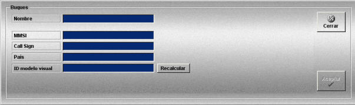
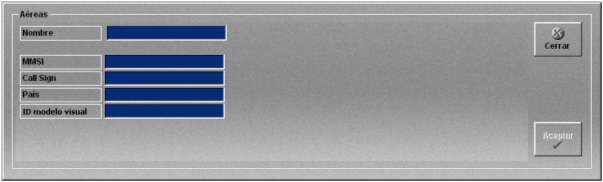

Unidades Móviles
Las unidades móviles se crean únicamente con sus datos de identificación (Nombre, MMSI, Call Sign y País) ya que el resto de los datos relativos a las dimensiones y datos cinemáticos del buque se incluyen en los modelos de plataforma. Una vez creada la unidad hay que añadirle una plataforma ya que no se pueden incluir unidades móviles sin plataforma en un ejercicio.
Para completar la definición de las unidades se añaden los equipos necesarios como se describe en el apartado Preparación de Ejercicios.
La creación y edición de buques se realiza mediante la siguiente ventana.

En esta ventana se definen los siguientes datos:
Nombre: Nombre del buque.
Formato: caracteres alfanuméricos.
MMSI: Identificador del servicio móvil marítimo (Maritime Mobile Service Identity).
Formato: 9 dígitos (ver el sistema de numeración de MSSI que se describe al final de este apartado).
Call Sign: Distintivo de llamada de la unidad.
Formato: caracteres alfanuméricos.
País: País al que pertenece la unidad.
Formato: caracteres alfanuméricos.
ID Modelo Visual: Imagen 3D que representa a la unidad cuando se dispone de sistema visual.
Formato: caracteres numéricos.
Nota: Si el simulador tiene sistema visual, para visualizar correctamente el objeto, el identificador que se introduzca en este campo debe existir en la carpeta correspondiente del PC del visual.
El botón Recalcular sirve actualizar datos relacionados con el modelo visual asociado (luces y mástiles).
La creación y edición de unidades móviles aéreas se realiza mediante la siguiente ventana.

En esta ventana se definen los siguientes datos:
Nombre: Nombre de la unidad.
MMSI: Identificador del servicio móvil marítimo (Maritime Mobile Service Identity).
Call Sign: Distintivo de llamada de la unidad.
País: País al que pertenece la unidad.
ID Modelo Visual: Imagen 3D que representa a la unidad cuando se dispone de sistema visual.
Nota: Si el simulador tiene sistema visual, para visualizar correctamente el objeto, el identificador que se introduzca en este campo debe existir en la carpeta correspondiente del PC del visual.
Sistema de numeración de MSSI:El sistema de numeración de MMSI consiste en 9 dígitos, de los cuales, el primero (o los dos primeros) identifica si el ID pertenece a una nave individual, a una estación costera o a un grupo de naves. El primer digito del MMSI tiene el siguiente significado:
| Primer dígito(s) | Significado |
| "0" | Utilizado para grupos de naves. |
| "00" | Utilizado para estaciones costeras. |
| "1" | Reservado para terminales INMARSAT "A". |
| "2"-"7" | Utilizados para naves individuales. |
| "8" | Reservado para grupos de estaciones vecinas. |
| "9" | Reservado para grupos de una nación. |
Los MMSI tienen un valor numérico de 3 cifras asignado a cada país (MID) que se sitúan después del primer digito(s), por ejemplo:
| Esquema | Ejemplo | Significado |
| MIDnnnnnn | 366777490 | Nave individual |
| 1MIDnnnnn | 136677749 | Nave individual, INMARSAT A |
| 0MIDnnnnn | 036699999 | Grupo de naves |
| 00MIDnnnn | 003669999 | Estaciones costeras |